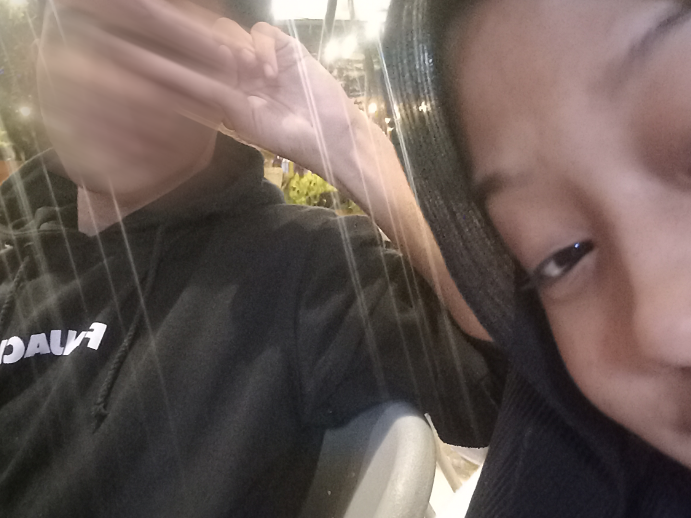
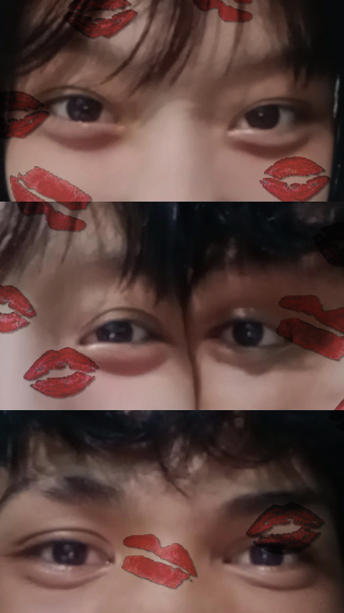

"Dalam Senyummu, Aku menemukan Rumah."
Waktu itu pertama kali main, ngobrolin hal random tapi hati rasanya tenang banget.
"Langit Pun Iri Melihat Kita, Sedeket Itu."
Pas kita kehujanan bareng, inget ga? Malah ketawa-ketawa sambil lari nyari tempat teduh.

"Malam Itu Tenang Banget."
Awal nya cuman mau main biasa, Eh tiba tiba ada angin apa..dan yang penting duduk bareng, walaupun ga banyak ngobrol.

"Hari PKL Terakhir."
Selesai jemput dia PKL, Main sebentar..dan kita baru foto bareng lagi.